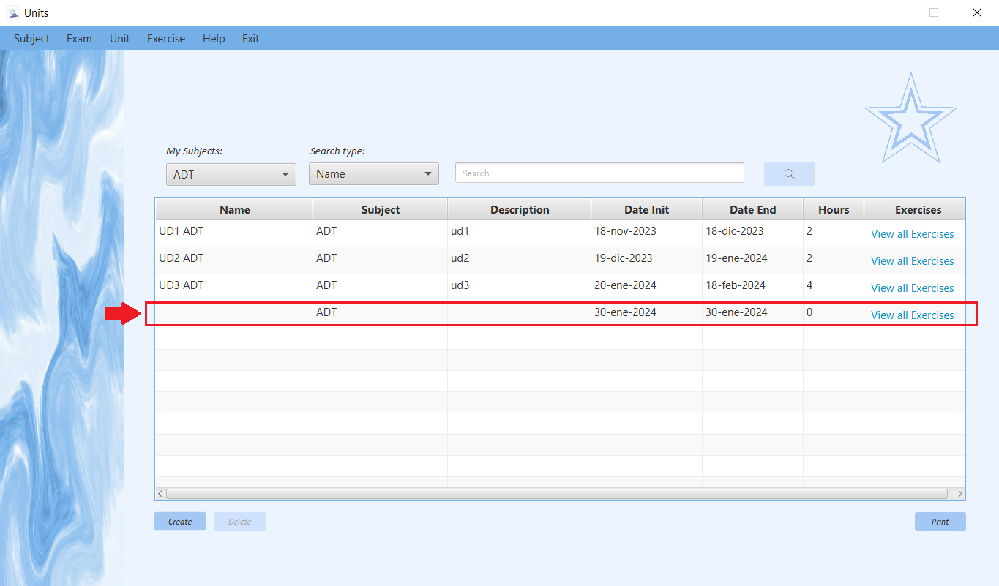
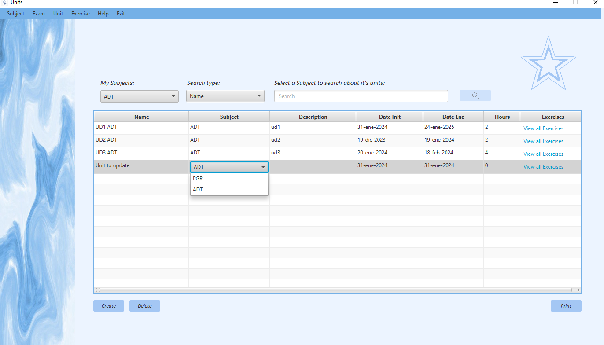

Units Manager: Help
Descripción general:
Esta ventana te permite ver las "Units" de una "Subject".
La aplicación permite dos tipos de usuario y tendran permisos diferentes.
Los "Teachers" por un lado, tendran permisos especiales para poder crear, modificar, buscar y eliminar las units de las subjects en las que este enseñando.
Los "Students" por otro lado, tendran unicamente permisos para poder buscar las units de de las subjects en las que este previamente matriculado.
Así mismo, ambos usuarios podrán generar un informe> que contiene un listado de los unidades con sus correspondientes datos.
Y también podran mediante el link que hay en la tabla por cada fila, "View all Exercises" ir a la ventana de manejo de exercises y verlos.
Operaciones para "Teacher":
Crear Units
Para crear una Unit, tendras que hacer click en el botón de "Create" y este generara una Unit con valores por defecto en la tabla.
Vamos a hacer un ejemplo en la subject "ADT" y le damos al botón de "Create"":
Si todo sale bien: saldra un mensajito de que se ha añadido una nueva unit
Despues de aceptar el mensaje la tabla se cargará con el nuevo valor.
Si algo falla: Puede ser porque en una misma Subject no pueden haber dos Unit con el mismo nombre, por lo que antes de crear la unit con valores por defecto te conprobara que no existe una sin nombre en la misma subjects donde se creé.
Si sucede este problema aparecera una alerta avisando que añadas nombre a la unit que no tiene y despues de añadirselo te dejara crear otra en la misma subject con valores por defecto.

Modificar Units:
Al ser una tabla editable puedes editar directamente la información que quieras clickando dos veces en el campo que quieras editar.
--> Modificar Name:Continuando con el ejemplo anterior, vamos a cambiarle los valores por defecto a la unit.
Primero clickaremos dos veces en la celda de "name" para ponerla en modo edición.
Le cambiaremos el nombre a "Unit to update" y le daremos al enter para aceptar el valor.
--> Posibles errores al modificar Name:Un error podría ser que metas el nombre de una unit que ya existe en la misma subject. Por ejemplo, vamos a poner "UD1 ADT" otra vez.

Y al darle al enter nos mostrara un mensjae avisando de que se repiten nombres en la subject y el valor no se guardara.
Otro problema podria ser: que el nombre que as escrito se ha pasado del limite de caracteres, ya que la celda solo permite 100 asi que serias avisado de que te has pasado del limite con este otro mensaje.
//---------FOTOOOOOOO Error LIMITE CHARACTERS --> Modificar Subject vista de las opciones en la celda  vista de la seleccion de pgr vista de que ya no esta en la tabla de adt la unit
vista de que ya no esta en la tabla de adt la unit
 abrimos tabla de pgr
abrimos tabla de pgr
 --> Modificar Description
--> Modificar Date Init
--> Modificar Date End
--> Modificar Hours
Borrar Units
--> Modificar Description
--> Modificar Date Init
--> Modificar Date End
--> Modificar Hours
Borrar Units
Se pueden borrar "Units" de dos maneras: Con el boton o con click derecho sobre la tabla.
En ambos casos se necesitara tener algo seleccionado en la tabla, si no el boton no se activara y si no el click derecho te avisara que selecciones una.
//---------FOTOOOOOOO DELETE desactivado //---------FOTOOOOOOO Seleccion == Delete activadoCuando se realice una de las dos acciones saldra una pregunta esperando confirmación para borrar la Unit seleccionada.

Si le das a la x o a cancelar desaparecera y entonces no se borrará nada.
Si le das a acceptar la unit se borrará y la tabla se actualizara.
Operaciones para ambos users
Busqueda de Units Imprimir listado de UnitsPulsando el botón Print se abrirá una ventana donde puede ver un documento que contiene un listado de los "Units" que existen en la aplicación.
//---------FOTOOOOOOO Pulso Print //---------FOTOOOOOOO REPORT